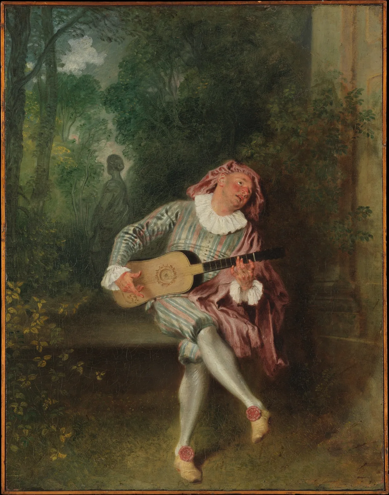
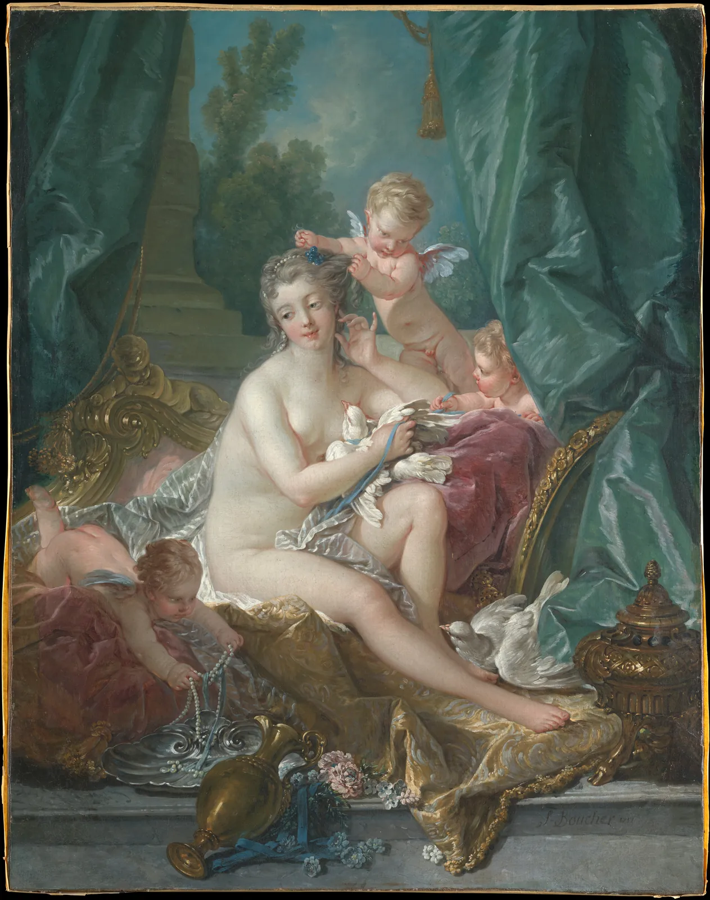
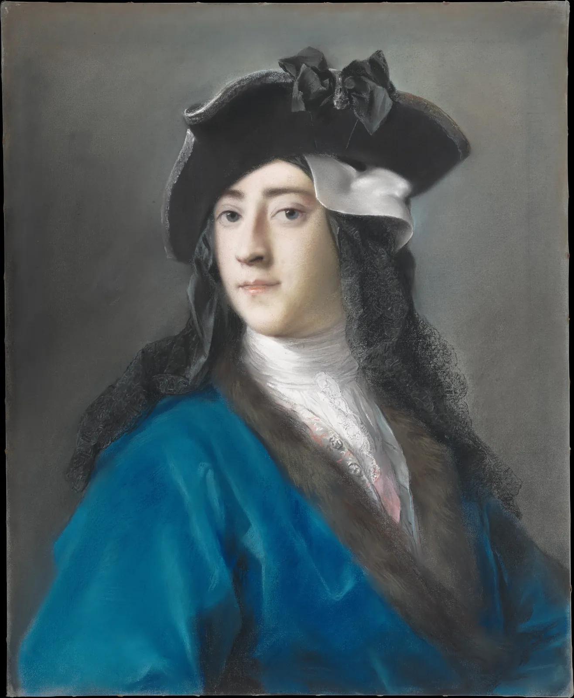
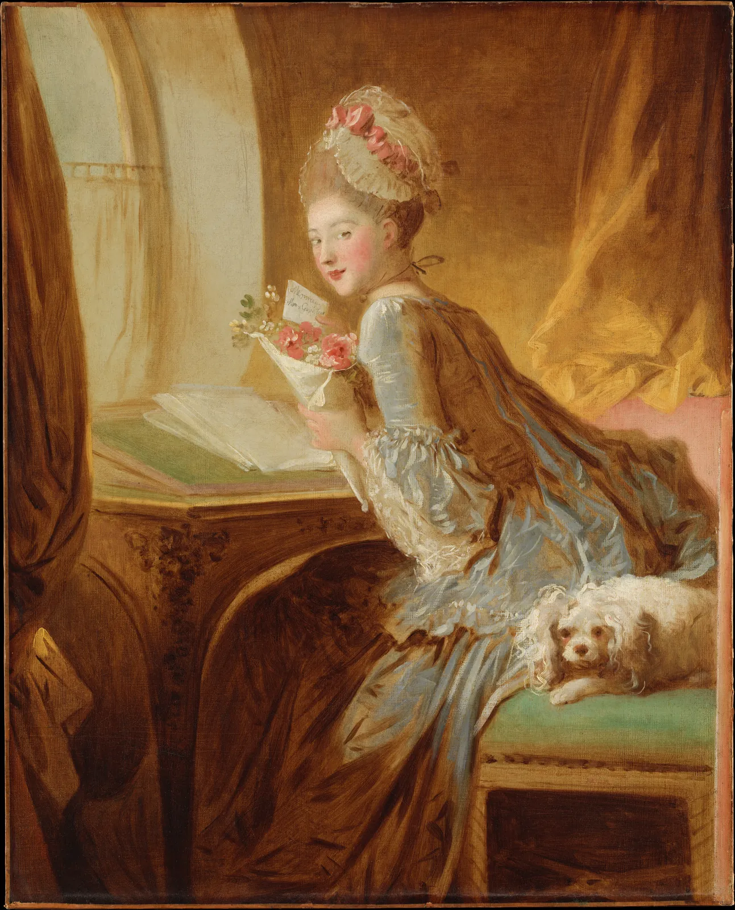
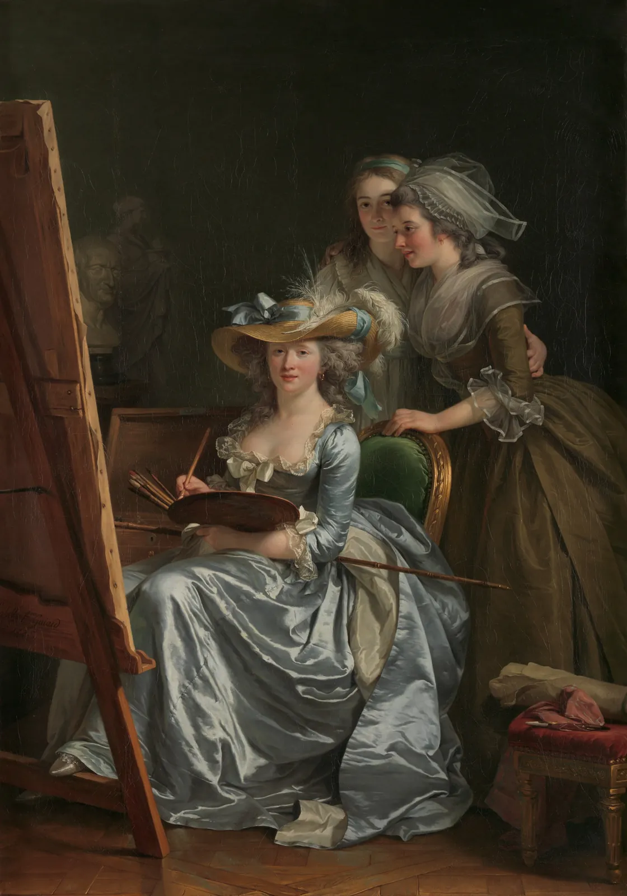
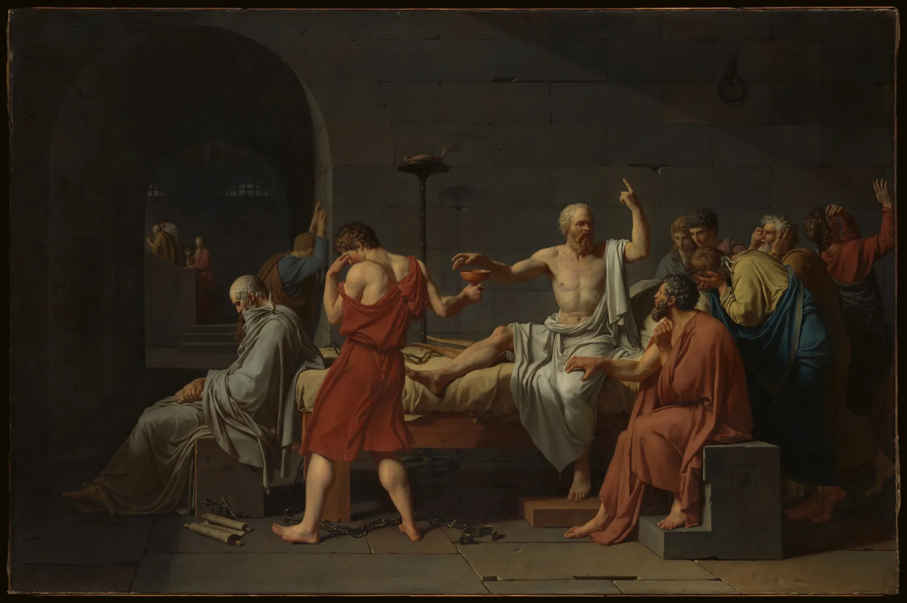
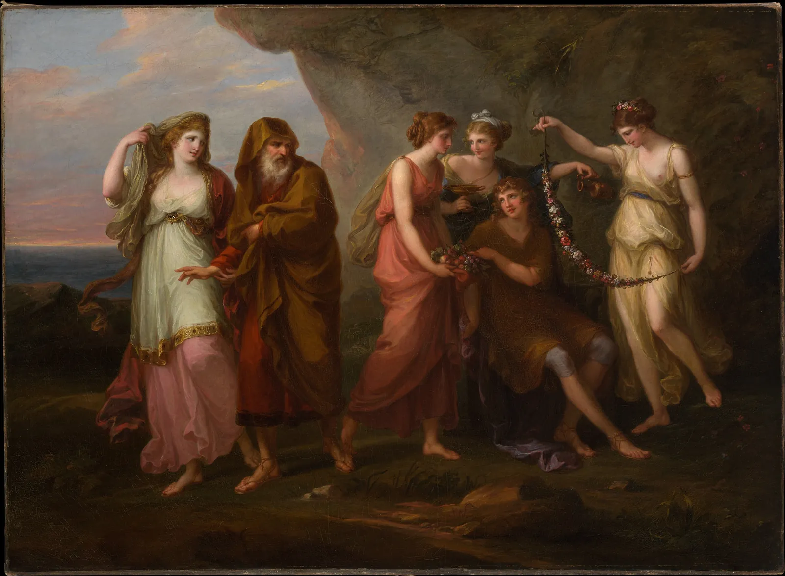

로코코와 신고전주의
18세기 프랑스 미술관의 방 두 개를 차례로 걸어 본다고 하자. 첫 방에는 분홍과 하늘색 비단, 금빛 곡선 액자, 정원에서 류트를 켜는 연인들이 있다. 둘째 방에는 돌벽 앞에 선 고대 철학자, 팽팽한 윤곽, 무대처럼 한 줄로 늘어선 인물들이 있다. 두 방의 그림이 백 년쯤 떨어져 있을 것 같지만, 실제로는 같은 도시에서 한 세대 안에 그려졌고, 같은 아카데미의 회원들이 그렸다. 이 장은 곡선과 장식의 로코코, 그리고 그에 맞선 엄격한 윤곽과 고대의 질서를 색·구도·기법의 렌즈로 나란히 읽는다.
- 로코코라는 이름의 유래와, 루이 14세 이후 파리의 저택과 살롱이 만든 새로운 그림의 쓰임을 설명한다.
- S자 곡선과 비대칭 장식이 로코코의 화면과 공예를 어떻게 묶는지 시뮬레이터로 확인한다.
- 재료로서의 파스텔과 색으로서의 파스텔 톤을 구별하고, 흰색을 섞을 때 명도와 채도가 어떻게 바뀌는지 본다.
- 아카데미의 장르 위계와 살롱 전시, 여성 화가의 입회 제한을 안다.
- 신고전주의의 윤곽과 부조 같은 무대를 읽고, 같은 시대 두 그림의 팔레트를 숫자로 비교한다.
조개껍데기와 곡선: 로코코
1715년 루이 14세가 죽자 프랑스 궁정의 중심은 한동안 베르사유에서 파리로 옮겨 갔다. 귀족과 부유한 금융가들은 파리 시내의 저택(hôtel)을 새로 짓거나 고쳤고, 거대한 의전용 방 대신 작고 아늑한 응접실과 침실을 꾸몄다. 벽은 흰색과 연한 색으로 칠하고, 문과 거울 둘레를 금빛 곡선 장식으로 감쌌다. 그림은 그 벽의 일부, 곧 문 위와 벽판 안에 끼워 넣는 장식이 되었다.
이 양식을 오늘날 로코코(Rococo)라고 부른다. 정원의 인공 동굴을 꾸미던 조개껍데기와 바위 모양 장식, 곧 로카유(Rocaille)에서 나온 말이다. 이 이름은 양식이 한창일 때가 아니라 18세기 말에 붙었고, 처음에는 지나치게 꾸민 옛 취향을 낮춰 부르는 말이었다는 설명이 흔하다. 4장의 바로크가 그랬듯, 사조의 이름은 뒤에 붙인 정리다.

장앙투안 와토(Antoine Watteau)는 1717년 왕립 회화 조각 아카데미에 입회 작품을 냈다. 귀족 남녀가 사랑의 섬 키테라로 떠나는 장면이었는데, 아카데미는 이 그림을 기존 장르 어디에도 넣지 못해 페트 갈랑트(Fête galante), 곧 "우아한 연회"라는 새 이름으로 기록했다. 정원과 공원에서 차려입은 남녀가 음악과 대화와 연애를 즐기는 그림이다. 역사화처럼 큰 사건도, 네덜란드 장르화처럼 보통 사람의 일상도 아닌, 꿈과 연극 사이의 장면이었다.
로코코 장식의 특징은 곡선만이 아니다. 바로크와 그 이전의 장식은 대개 좌우가 대칭이었는데, 로카유 장식은 일부러 좌우를 어긋나게 만들곤 했다. 한쪽 소용돌이는 위로 말리고 다른 쪽은 아래로 흘러내린다. 아래 시뮬레이터에서 액자 장식의 비대칭과 소용돌이의 말림을 바꿔 본다. 맨 위의 조개껍데기 꼭짓점은 끌어서 옮길 수 있다.
로카유 액자: 비대칭과 말림
비대칭을 조금 넣으면 액자가 살아 움직이고, 너무 많이 넣으면 무너진다. 로코코 장인들은 대칭이라는 큰 틀은 지키면서 세부에서 어긋남을 주는 쪽을 택했다. 같은 시기의 의자 다리, 촛대, 시계, 도자기 손잡이에도 같은 곡선과 어긋남이 나온다. 로코코는 그림의 양식이기 전에 방 전체의 양식이었다.
아름다움의 선
영국의 화가 윌리엄 호가스(William Hogarth)는 1753년 『미의 분석』(The Analysis of Beauty)이라는 책을 냈다. 그는 여러 굵기와 휨의 선을 늘어놓고 비교하며, 지나치게 곧은 선은 밋밋하고 지나치게 휜 선은 투박한데, 그 사이에서 알맞게 휜 S자 선이 가장 아름답다고 주장했다. 그는 이 선을 아름다움의 선(Line of beauty)이라 불렀다. 호가스 자신은 로코코 화가라기보다 풍자 판화가였지만, 그의 S자 선은 같은 시대 유럽의 취향을 잘 요약한다. 다만 "가장 아름다운 휨"은 호가스의 의견이지 측정된 사실이 아니다.

프랑수아 부셰(François Boucher)는 로코코를 대표하는 화가다. 왕의 애첩이자 큰 후원자였던 퐁파두르 부인의 사랑을 받았고, 1765년 왕의 수석 화가가 되었다. 그는 그림만이 아니라 보베와 고블랭 공방의 태피스트리 밑그림, 세브르 도자기의 장식 도안도 그렸다. 그림과 공예가 같은 곡선을 나눠 쓴 것이다. 아래 시뮬레이터는 S자 선 하나의 휨을 바꾸고, 그 선을 의자 다리와 꽃병의 옆모습에 그대로 써 본다.
S자 선 하나로: 선, 의자 다리, 꽃병
휨을 조금씩 바꾸면 같은 선이 막대에서 우아한 S로, 다시 꿈틀거리는 뱀으로 바뀐다. 무엇이 "알맞은" 휨인지는 시대와 쓰임에 따라 다르다. 의자 다리라면 무게를 버틸 듯 보여야 하고, 비단 휘장이라면 흘러내려야 한다. 로코코 화가와 장인들은 이 곡선을 그림의 인물, 액자, 가구에 같은 문법으로 썼다. 그래서 방 전체가 한 덩어리의 장식처럼 보였다.
파스텔: 재료와 색
"파스텔"이라는 말은 두 가지를 가리킨다. 하나는 재료다. 안료 가루에 접착제를 아주 조금 섞어 막대 모양으로 굳힌 것으로, 종이에 문질러 그린다. 이탈리아어 pastello(반죽)에서 온 이름이다. 다른 하나는 색이다. 흰색이 많이 섞여 밝고 부드러운 분홍, 하늘색, 연두 같은 색을 "파스텔 톤"이라 부른다. 둘은 이어져 있다. 파스텔 막대는 안료에 흰 백토나 분필 가루를 섞어 밝은 단계들을 미리 만들어 두기 때문이다.

베네치아의 로살바 카리에라(Rosalba Carriera)는 파스텔 초상으로 유럽 전역의 귀족과 여행자에게 이름을 떨쳤고, 1720년 파리를 방문했을 때 왕립 아카데미의 회원이 되었다. 그 뒤 파리에서는 파스텔 초상이 크게 유행했다. 파스텔은 마르는 시간이 필요 없어 모델을 오래 앉혀 두지 않아도 되었고, 가루가 빛을 고르게 흩어 피부와 비단, 분가루를 바른 머리를 부드럽게 표현했다.
흰색을 섞으면 색은 어떻게 변할까. 밝아지는 것은 당연하지만, 채도와 색상도 함께 바뀐다. 아래 시뮬레이터는 이 책 엔진의 물감 혼합 모형(쿠벨카–뭉크)으로 안료에 흰색을 조금씩 더한 단계표를 만들고, 각 단계를 명도–채도 판 위에 놓는다. 판 위의 점을 끌어 단계를 고른다. 회색 점들은 부셰의 「비너스의 단장」에서 뽑은 색이다.
흰색을 섞으면: 파스텔 톤의 길
흰색을 섞은 색이 "부드럽게" 보이는 이유의 절반은 명도가 오르는 것, 나머지 절반은 채도가 내려가는 것이다. 둘이 함께 일어나므로 파스텔 톤끼리는 서로 부딪치지 않고 쉽게 어울린다. 부셰의 화면에서 분홍 천과 청록 휘장이 나란히 놓여도 시끄럽지 않은 것은 그 때문이다. 반대로 부셰의 그림을 숫자로 재 보면 화면의 대부분은 꽤 어둡고 탁하다. 밝은 파스텔 면은 넓은 중간 톤 위에 얹힌 일부다. 색의 인상과 색의 분포는 다를 수 있다.
사적인 방과 새 관객
로코코 그림의 주제는 대부분 사적이다. 연애편지를 받은 여인, 그네 타는 연인, 화장하는 여신, 아이를 돌보는 어머니. 장오노레 프라고나르(Jean Honoré Fragonard)의 「연애편지」는 그 분위기를 잘 보여 준다.

이런 그림은 누가 보았을까. 우선 주문한 귀족과 금융가의 응접실에 모인 손님들이다. 그런데 18세기 파리에는 새로운 관객도 생겼다. 왕립 아카데미는 회원들의 신작을 루브르 궁의 "네모난 방"(Salon Carré)에서 전시했고, 1737년부터는 정기적으로(처음에는 해마다, 뒤에는 대개 2년에 한 번) 열었다. 방 이름을 따서 이 전시를 살롱(Salon)이라 불렀다. 입장은 무료였고, 귀족과 상인, 장인과 하인까지 수많은 사람이 벽을 빼곡히 채운 그림을 보러 왔다.
관객이 생기자 비평도 생겼다. 철학자 드니 디드로(Denis Diderot)는 1759년부터 살롱 전시평을 써서 유럽의 구독자들에게 보냈다. 그는 부셰의 그림이 기교는 뛰어나지만 경박하다고 거듭 비판했고, 대신 장바티스트 그뢰즈(Jean-Baptiste Greuze)의 교훈적인 가정 장면이나 장시메옹 샤르댕(Jean Siméon Chardin)의 소박한 정물과 부엌 장면을 높이 평가했다. 그림이 "무엇을 가르치는가"를 묻는 목소리가 커진 것이다. 이 목소리는 다음 절의 아카데미, 그리고 신고전주의로 이어진다.
아카데미와 장르의 위계
프랑스의 왕립 회화 조각 아카데미(Académie royale de peinture et de sculpture)는 1648년에 세워졌다. 화가를 길드의 장인에서 "학문을 하는 예술가"로 끌어올리려는 기관이었고, 회원 선발, 교육, 살롱 전시, 왕실 주문의 배분을 쥐었다. 아카데미의 교육은 고대 조각의 석고상 소묘에서 시작해 남성 누드 모델 소묘로 나아갔다. 형태는 먼저 윤곽과 소묘로 잡고 색은 그 뒤라는 생각이 바탕에 있었다.
아카데미는 주제에도 높낮이를 매겼다. 1667년 아카데미의 강연록 서문에서 앙드레 펠리비앵(André Félibien)이 정리한 이 서열을 흔히 장르의 위계(Hierarchy of genres)라 부른다. 성경·신화·역사 속 인간의 행동을 그리는 역사화가 맨 위에, 생명 없는 물건을 그리는 정물이 맨 아래에 놓였다.
아카데미는 여성에게 거의 닫혀 있었다. 몇몇 여성이 회원으로 받아들여졌지만 1770년에는 여성 회원을 한 번에 네 명까지로 제한했고, 여성은 누드 모델 수업에 참여할 수 없었다. 역사화의 기본기인 인체 소묘를 배울 길이 막혔으니, 여성 화가들은 주로 초상과 정물로 이름을 얻었다. 1783년 같은 날, 두 여성 초상화가 아델라이드 라비유기아르(Adélaïde Labille-Guiard)와 엘리자베트 비제르브룅(Élisabeth Vigée Le Brun)이 아카데미에 입회했다.

라비유기아르는 이 자화상을 1785년 살롱에 냈다. 그는 여성 제자들을 길러 냈고, 여성 회원 수 제한을 없애야 한다고 주장했다. 비제르브룅은 왕비 마리 앙투아네트의 초상화가로 유명했고, 1789년 혁명이 일어나자 프랑스를 떠나 이탈리아, 오스트리아, 러시아 등지에서 초상화가로 일했다. 마지막 절의 시뮬레이터에서 그가 1787년에 그린 딸 쥘리의 초상을 볼 수 있다.
신고전주의: 윤곽과 질서
18세기 중반, 유럽은 고대를 새로 발견했다. 나폴리 근처에서 화산재에 묻혔던 헤르쿨라네움(1738년부터)과 폼페이(1748년부터)의 발굴이 시작되어 고대 로마의 벽화, 가구, 그릇이 쏟아져 나왔다. 독일의 미술사가 요한 요아힘 빙켈만(Johann Joachim Winckelmann)은 1755년의 글 『그리스 회화와 조각의 모방에 대한 생각』에서 그리스 미술의 본질을 "고귀한 단순함과 고요한 위대함"(edle Einfalt und stille Größe)이라고 요약했다. 로코코의 장식과 관능에 지친 사람들에게 이 말은 새로운 기준이 되었다. 이렇게 고대 그리스·로마를 본보기로 삼은 미술을 신고전주의(Neoclassicism)라 부른다.

자크루이 다비드(Jacques Louis David)는 신고전주의 회화의 중심에 선 화가다. 로마 유학에서 고대 조각과 라파엘로, 푸생을 공부했고, 1780년대에 「호라티우스 형제의 맹세」(1784~85, 루브르)와 「소크라테스의 죽음」(1787)으로 살롱의 주목을 받았다. 이 그림들의 주제는 사랑이 아니라 의무와 희생, 죽음 앞의 덕이다. 그리고 방식도 정반대다. 프라고나르의 붓이 물결치듯 흐른다면 다비드의 붓은 보이지 않는다. 형태는 날카로운 윤곽으로 닫혀 있고, 빛은 조각을 비추듯 고르고 단단하다.
다비드의 구도에서 가장 눈에 띄는 것은 인물들이 깊이 쪽으로 흩어지지 않고 화면과 나란한 얕은 띠에 늘어선다는 점이다. 고대 신전의 띠 모양 부조(Frieze)를 닮아 흔히 부조 같은 구도(Frieze-like composition)라 부른다. 아래 시뮬레이터에서 무대 위 다섯 사람을 평면도에서 옮겨 앞에서 본 모습을 비교한다.
얕은 무대와 깊은 무대: 부조 같은 구도
얕은 무대에서는 모든 인물의 몸짓이 같은 크기와 같은 선명도로 읽힌다. 관람자는 장면 안으로 빨려 들어가기보다 한 걸음 떨어져 연설을 듣듯 바라본다. 감정에 휩쓸리기보다 판단하게 만드는 구도다. 이것이 신고전주의가 원한 효과였다. 물론 다비드도 언제나 이 구도만 쓴 것은 아니고, 부조 같은 구도 자체는 고대와 르네상스, 푸생에게서 이미 쓰였다. 신고전주의는 그것을 다시 앞세웠다.

스위스 태생의 앙겔리카 카우프만(Angelica Kauffmann)은 로마와 런던에서 활동했고, 1768년 런던 왕립 아카데미가 세워질 때 창립 회원 가운데 두 여성 중 한 명이었다. 그는 여성이 거의 그리지 못했던 역사화를 그렸다. 카우프만의 그림은 로코코와 신고전주의가 칼로 자르듯 나뉘지 않는다는 것을 보여 준다. 무대와 주제는 고대의 것이지만, 색과 몸짓은 부드럽다.
한 시대, 두 그림
교과서의 연표는 로코코 다음에 신고전주의를 놓는다. 그러나 실제로는 겹쳐 있었다. 프라고나르는 1806년까지 살았고, 다비드가 「소크라테스의 죽음」을 낸 1787년 살롱에는 비제르브룅과 라비유기아르의 초상도 걸렸다. 같은 아카데미의 회원들이 같은 벽에 정반대의 그림을 걸었다. 1789년 혁명은 이 균형을 무너뜨렸다. 로코코는 무너진 구체제의 취향으로 여겨졌고, 다비드는 혁명 정부에서 미술 행정의 중심에 섰다. 그 뒤 이야기는 7장으로 이어진다.
마지막 시뮬레이터는 같은 시대의 그림 두 점을 골라 팔레트와 명도·채도를 나란히 놓는다. 양쪽에서 그림을 하나씩 고르고, 아래 판에서 두 팔레트가 어디서 겹치고 어디서 갈리는지 본다. 동그라미는 A, 네모는 B다.
같은 시대 두 그림: 팔레트 비교기
숫자는 인상을 확인해 주기도 하고, 뒤집기도 한다. 프라고나르와 다비드는 인상 그대로 크게 다르다. 그런데 라비유기아르의 자화상은 은빛 비단의 인상과 달리 화면의 대부분이 어둡다. 로코코와 신고전주의를 가르는 것은 팔레트만이 아니라, 무엇을 그리는가(사랑과 덕), 어떻게 짜는가(곡선과 비대칭, 얕은 띠와 수평·수직), 무엇으로 그리는가(드러난 붓질과 감춘 붓질)의 묶음이다. 한 가지 렌즈로만 보면 경계는 흐려진다. 세 렌즈를 함께 대야 같은 시대의 두 그림이 서로 다른 말을 하는 것이 보인다.
서윤의 작업 노트
5회차, 두 그림의 팔레트를 나란히
5회차는 10월 2일 토요일이다. 서윤은 이번 회차를 "비교 카드" 한 장으로 끝내기로 했다. 같은 시대의 그림 두 점을 카드 앞면에 나란히 놓고, 각각의 팔레트를 나란히 붙이는 것이다. 첫 안은 부셰의 「비너스의 단장」(1751)과 다비드의 「소크라테스의 죽음」(1787)이었다. 도경이 연도를 짚었다. "36년 차이면 같은 시대라고 하기엔 좀 멀지 않아? 그 사이에 사람이 한 세대 바뀌었어."
서윤은 다비드와 더 가까운 해의 그림을 찾았다. 처음 떠올린 것은 라비유기아르의 1785년 자화상이었다. 은빛 비단과 깃털 모자가 로코코 쪽 그림으로 딱 맞아 보였다. 그런데 팔레트 비교기에 넣어 보니 예상과 달랐다. 이 책의 모델로 계산하면 라비유기아르의 평균 명도는 L* 약 21, 평균 채도는 C* 약 11로, 다비드(L* 약 15, C* 약 10)와 크게 다르지 않았다. 화면 대부분이 어두운 화실이기 때문이다. 서윤은 이 결과를 버리지 않고 카드 뒷면의 "숫자가 뒤집은 인상" 칸에 넣기로 했다.
앞면의 짝은 프라고나르의 「연애편지」(1770년대 초)와 다비드의 「소크라테스의 죽음」(1787)으로 정했다. 두 화가는 같은 시대 파리에서 활동했고, 프라고나르는 다비드보다 오래 살았다. 프라고나르는 1765년 아카데미의 준회원 자격을 얻었지만 정회원 절차를 마치지 않고 개인 수집가의 주문에 힘을 쏟았다. 살롱보다 응접실의 화가였던 셈이다. 이 책의 모델로 계산하면 프라고나르의 평균 채도는 C* 약 32, 다비드는 약 10으로 세 배가 넘게 차이 나고, 명도 L* 25 아래의 어두운 면은 프라고나르가 화면의 약 28%, 다비드가 약 85%다. 팔레트는 각각 다섯 색으로 뽑아 카드에 붙였다. 도경은 숫자 옆에 그림의 크기도 적자고 했다. 「연애편지」는 83 × 67 cm, 「소크라테스의 죽음」은 130 × 196 cm다. "응접실 벽의 그림과 살롱 벽의 그림이라는 것도 같이 보여 줘야지."
| 칸 | 프라고나르, 「연애편지」, 1770년대 초 | 다비드, 「소크라테스의 죽음」, 1787 |
|---|---|---|
| 색 | 금빛·주황이 화면 전체를 물들임, 평균 채도 C* 약 32 | 어두운 돌벽 앞의 흰 옷과 붉은 옷, 평균 채도 C* 약 10 |
| 구도 | 휘장과 드레스의 사선과 곡선, 인물은 돌아봄 | 화면과 나란한 얕은 띠, 벽과 아치의 수평·수직 |
| 기법 | 물결치는 빠른 붓질 | 감춘 붓질, 닫힌 윤곽 |
| 크기·자리 | 83 × 67 cm, 저택의 사적인 방 | 130 × 196 cm, 1787년 살롱 |
| 질문 | 같은 도시, 같은 시대의 두 화가가 이렇게 다른 그림을 그렸다면, 무엇이 달랐을까? 그린 사람일까, 보는 사람일까? | |
대학생 단골이 미리 남긴 질문은 이랬다. "로코코가 끝나서 신고전주의가 온 거죠?" 서윤은 그 질문에 바로 답하지 않고, 회차의 마지막 활동으로 카우프만의 1782년 그림을 띄워 참가자들에게 "어느 쪽 방에 걸지" 투표하게 하기로 했다. 무대는 신고전, 색은 로코코인 그림이다. 정 선생님은 파스텔 이야기를 듣고 집에 있던 오래된 파스텔 상자를 가져오겠다고 했다. 서윤은 흰색을 섞어 가는 단계표를 참가자들이 직접 문질러 보게 하는 5분짜리 활동을 카드 뒷면 아래에 적었다.
핵심 정리
- 로코코는 1715년 이후 파리 저택의 작은 방들을 꾸민 곡선과 비대칭의 장식 양식이다. 이름은 로카유(조개껍데기·바위 장식)에서 왔고, 18세기 말에 붙은 뒤늦은 이름이다.
- 와토의 페트 갈랑트, 부셰의 신화, 프라고나르의 연애 장면처럼 로코코의 주제는 사적이고, 그림은 액자·가구·태피스트리와 같은 곡선의 문법을 나눠 썼다. 호가스는 이 곡선을 "아름다움의 선"으로 정리했다.
- 파스텔은 가루 막대 재료이자 흰색이 많이 섞인 밝고 부드러운 색이다. 흰색을 섞으면 명도는 오르고 채도는 대체로 내려가며, 안료에 따라 색상도 돈다.
- 왕립 아카데미는 역사화를 맨 위, 정물을 맨 아래에 둔 장르의 위계를 세웠고, 살롱 전시로 새로운 대중 관객과 비평을 만들었다. 여성 회원은 수가 제한되었고 누드 소묘 교육에서 배제되었다.
- 신고전주의는 고대 발굴과 빙켈만의 "고귀한 단순함과 고요한 위대함"을 기준으로, 닫힌 윤곽, 감춘 붓질, 화면과 나란한 얕은 무대(부조 같은 구도), 의무와 덕의 주제를 내세웠다.
- 로코코와 신고전주의는 같은 시대, 같은 아카데미 안에서 겹쳐 있었다. 팔레트 숫자만으로는 둘이 깨끗이 나뉘지 않으며, 색·구도·기법을 함께 대야 차이가 보인다.
확인 퀴즈
1. "로코코"라는 이름에 대한 설명으로 가장 알맞은 것은?
2. 옐로 오커에 흰 물감을 점점 더 섞어 단계표를 만들었다. 이 책의 물감 모형에서 나타나는 변화로 가장 알맞은 것은?
3. 프랑스 왕립 아카데미의 장르 위계에서 가장 높이 평가된 장르는?
4. 다비드의 「소크라테스의 죽음」에서 인물들이 화면과 나란한 얕은 띠에 늘어선 구도가 주는 효과로 가장 알맞은 것은?